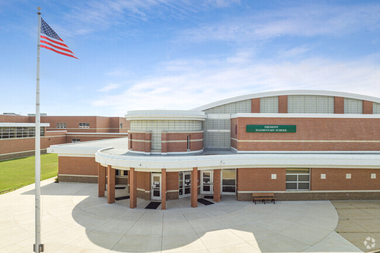
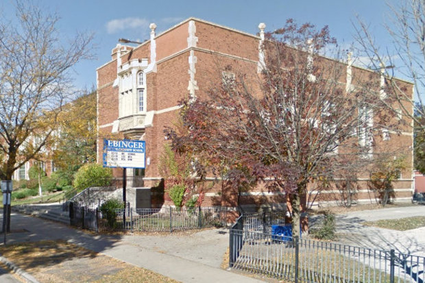

Academics
Elementary School
I started kindergarten at a school in the suburbs of Illinois called Fremont Elementary in 2015. I was there for six years up until 5th grade. I was in the second half of 4th grade when the Covid-19 pandemic began and I had to complete online school. My father had gotten a new job in Chicago and we would have to move. My last year at Fremont was spend during remote learning in 5th grade.


Middle School
After we moved to Chicago, me and my sister went to a new school called Ebinger Elementary. We were still in the middle of the Covid pandemic so we had to wear masks in school. I was very nervous going to a new school, not knowing how people in Chicago would be. Fortunately, I was suprised with how kind and accepting the people in my grade were of me. I met a lot of new people and made many new friends.
Seventh grade was a much more difficult year. We had a substantially greater amount of homework, projects, and tests to worry about. There was also a lot of pressure, with us being told this was "the year that counted" toward out highschool exams. Thankfully, the people in my class made the year both entertaining and sufferable. It was probably my favorite year out of the three that I spent at Ebinger.
In eighth grade, I had won and became student council president. This meant I would also give a speech at out graduation. Although I was only there for three years, I was still sad to have to leave everyone I met. However, I was proud of everything I was able to do in my short amount of time with them.
High School
I started Highschool in August of 2024. As of writing this, I am a little more than halfway through my freshman year. I am still very early on in my highschool journey and am exicted for what will come next.

Contact Information
Email: gvales@cps.edu